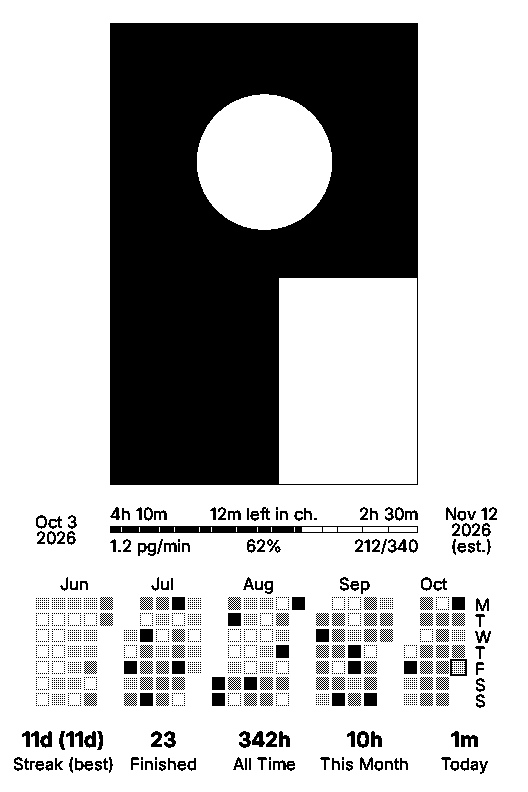

Reading Heatmap for the Xteink X3
A CrossInk sleep screen with your current book's cover and progress, plus a 5-month reading heatmap and streaks.
- Open this page in Chrome or Edge on a computer.
- Plug your X3 in with a USB-C data cable and turn it on.
- Click Install, pick the device in the list, and wait about a minute until it says done.
- On the X3: Settings → Display → Sleep Screen → Reading Heatmap.
This browser can't talk to USB devices. Use Chrome or Edge on a computer.
Installing needs a secure (https) page.
Your settings and SD card are kept; nothing is erased. Version 1.0.0 · release and SD card download

Caveats
- X3 only. It needs the X3's clock. Turn on reading stats and make sure the date and time are right.
- Page numbers use CrossInk's stable page numbers, so run your EPUBs through the CrossInk EPUB Optimizer. Without it the page count stays blank.
- USB-locked device? USB flashing won't work. Download the
.binfrom the release and use Settings → System → SD Card Firmware Update (needs CrossInk installed first). - Minutes read count from install onward. Labels are English only.
- Unofficial fork of CrossInk, so please don't report issues to the CrossInk developers. To go back, change the sleep screen first, then install official CrossInk from Inky.